TP2-Automne 2024
fait par: Cédryk Bilodeau
Techniques d'intégrations multimédia
Collège de Maisonneuve
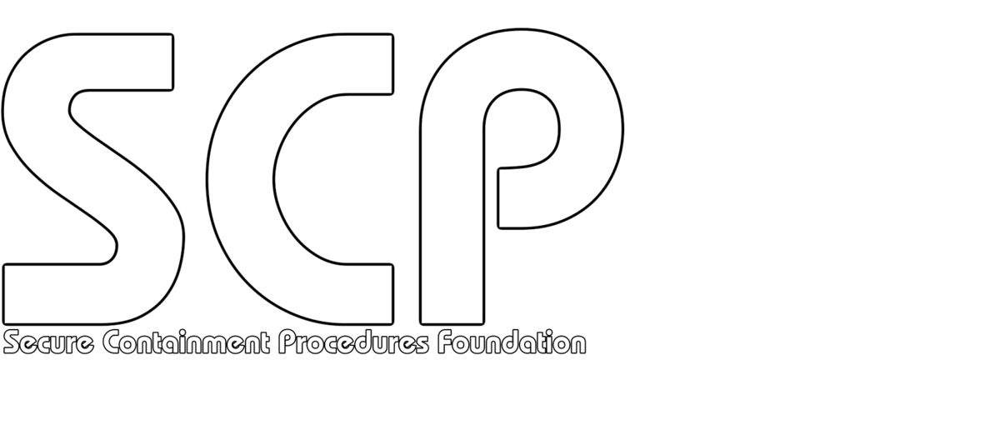s'inscrire
Qu'est-ce que les SCP ?
SCP veut dire Secure, Contain, Protect (Sécuriser, Contenir et Protéger). Ces trois mots forme la devise de la fondation SCP, une organisation secrète capturant, emprisonnant et etudiant des anomalies(monstre, objet possedant des pouvoir, des entités, des phénomenes, des virus... etc), dans le but de protéger le monde de sa destruction. cette univers est facinant grace a toute les merveile qu'il contient grace les beaucoup trop nombreuse anomalies. la fondations donne le nom de code SCP suivi d'un numéro pour identifier les anomalies, certaine anomalie contiennet des sous anomalie engendrer par de interaction avec ces dernière.
les différent départements de la fondations
Département sécurité
garde
les guardes sont ceux qui sont en charge d'assurer la sécurité du sites, ils sont armer de fusil mitrailleur. ce sont eu qui soccupent de surveiller les classe-d et de monter la garde devant les checkpoints et les cellules des SCP
les gardes on des accréditation de niveau 3 à 4 dépandament de leur rang
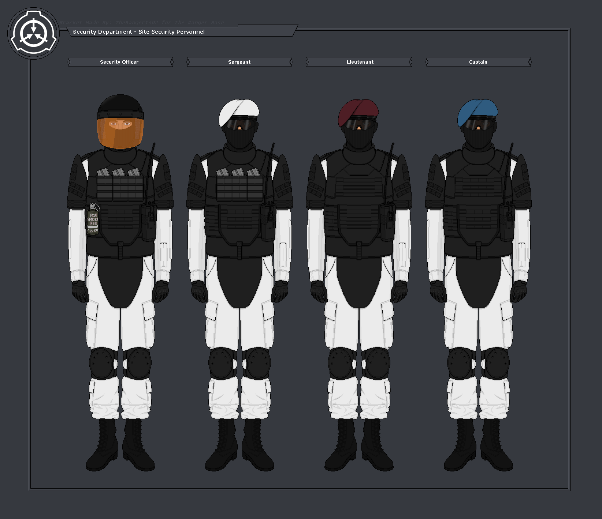| beret | rang | niveau d'acréditation |
|---|---|---|
| aucun | recrue, debutant, caporale, sergent | 3 |
| blanc | sergent | 3 |
| bourgogne | capitaine | 3 |
| bleu | major | 3 |
| rouge | commandant | 4 |
| noir | Général | 4 |
mobile task force
les mobile task forces sont des untés d'élite spécialiser dans le combat contre les scp, ils sont déployer sur les sites qui on des brèche de sécurité, avec pour objectif de recapturer et reconfiner les SCP s'étant échaper.
il existe une grande variété d'unité de mobile task forces, tous on des spécialisation bien précise pour des type d'anomalie bien spécifique
| assignation | nom de code | spécialisation | symbole |
|---|---|---|---|
| Alpha-1 | RED RIGHT HAND (LA MAIN ROUGE) | unité d'élite, les meilleur des meilleur, garde les membre du conceil des 05, sont des soldat d'une efficacité incroyable, ne répondant qu'uniquement au ordre de 05 | 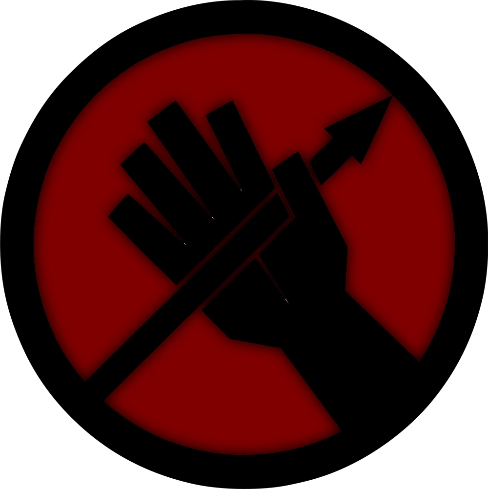 |
| Epsilon-11 | NINE TAIL FOX (LE RENARD A NEUF QUEU) | spécialiser dans le reconfinement des nimporte quel SCP de classe euclide | |
| Nu-7 | HAMMER DOWN (MARTEAU À TERRE) | lourde puissance de feu, spécialiser pour reconfiner les SCP hautement aggressif en utilisant une grande puissance de feu et des armes lourd pour tuer ou neutraliser un SCP | |
| Beta-7 | MAZ HATTERS | spécialiser dans les opérations concernant des SCP ayant un risque de toxicité, virus, radioactivité, etc | 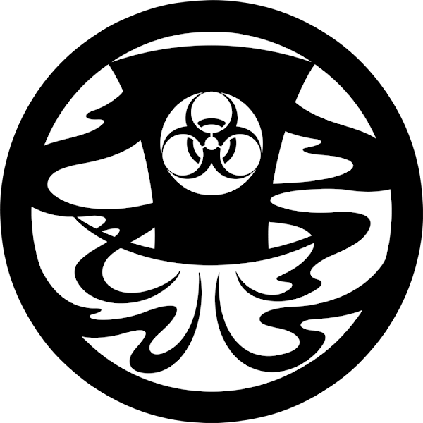 |
| département | poste | niveau acréditation | description | |
|---|---|---|---|---|
| tout les départements | 05 | 5 | les plus haut gradé, on l'autorité sur n'importe quel autre membre du personnel, il y a un 05 pour chaque cathégorie de membre de personnel excepté les classe-d. Leurs identité sont garder des plus secrète, ils opèrent depuis l'ombre | 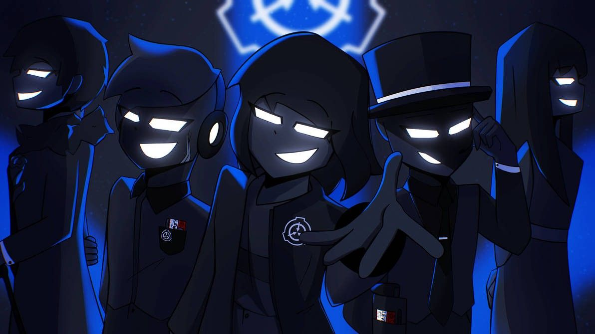 |
| département gestion | gestionnaire de site | 5 | gère toutes la logistique du site et siège au conseil d'administration, possède une carte d'acréditation de nivaux 5 |  |
| département recherche | scientifique | 3, 4 ou 5 | les scientifique observent, prennent des notes et trouvent de nouveaux moyens de contenir et tester les pouvoir des différents SCP le niveau de leur carte d'accréditation dépend de leurs importance dans la hierarchie du site, la plus part des scientifique on une acréditation de niveau 3, les plus important on une acréditation de niveau 4 ou 5 |
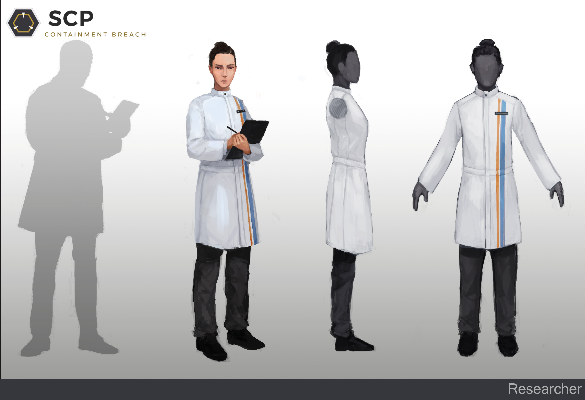 |
| sujet de teste | classe-d | 0 | les classe-d sont des condamné a mort qui ont signé un contrat pour evité la peine de mort travaile desormais pour la fondation en tant que sujet de test, en échange on leur rend leurs liberté après dix ans, toutefois la plus part ne survivent jusque la. Ils sont comme des prisonnier et sont garder dans des cellules jusquace que les scientifique soit prêt a les faire intéragire avec des SCP. ils sont essentiel auau recherche sur les SCP. | 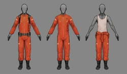 |
les sites de la fondation
zone des classe-d
les cellules des classe-d sont situer dans la zone sécuritaire du site, il on droit a de la mnouriture dans leur cafeteria, leurs cellules sont surveiller par des gardes, c'est ici que les scientifique viennent chercher les classe-d qui sont ensuite escorter vers les zone de confinement
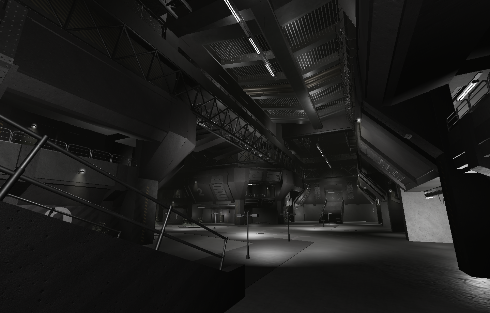 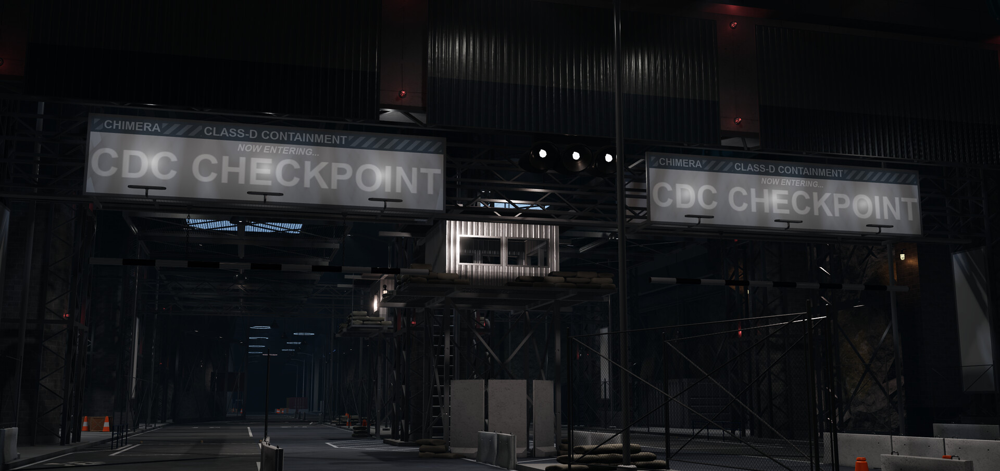zone de confinement léger
c'est ici que les SCP de classe Safe sont contenu, la plus part des SCP dans cette zone ne sont pas dangereux ou ne représente qu'une faible menace, on y retrouve également certain SCP de classe euclide
cette zone est accessible pour les niveau d'acréditation 2 ou supérieur, toutefois l'acréditation des cellules des SCP peuvent nécéssiter une acréditation de nivaux 3 ou supérieur
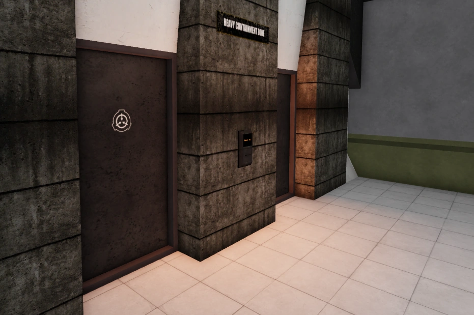zone de confinement lourd
c'est ici que les SCP les plus dangereux sont détenu, cette zone contient plus de gardes et plus de porte blindé antibrèche qui se ferment en cas d'alerte, les SCP de classification Keter ce trouvent dans cette zone ainsi que la grande majorité des SCP de classe Euclide
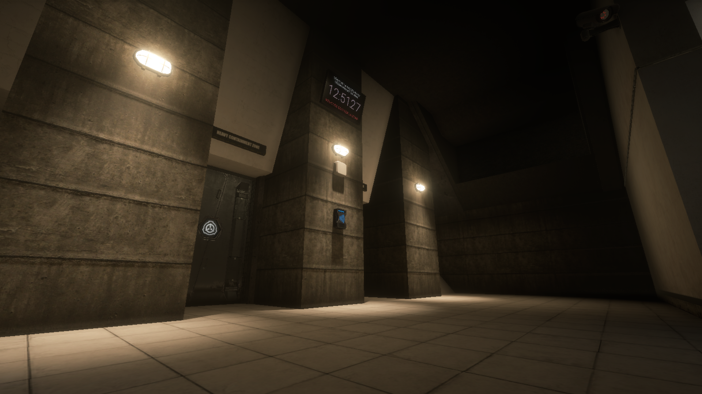différentes carte de sites
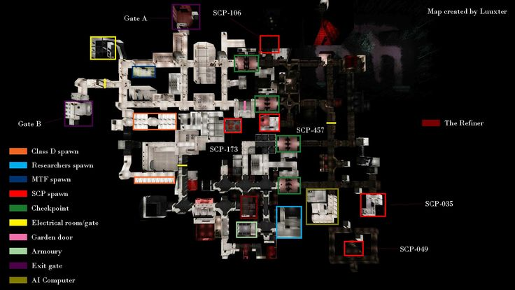
Les anomalies
les classifications des SCP
les classifications servent a indiquer le niveau de difficulter a guarder un SCP en confinement, ces status ne représente pas nécessairement le nivaux de danger qu'il représente
classe: safe
la classe Safe est attribuer a un SCP qui ne bouge pas ou ne représente aucun danger si il n'est pas mis en confinement.
certain SCP de cette classe on le droit de se promenner sur le site ou ils sont confiner.
toutefois la plus part des SCP de cette classe sont des objet et sont donc très facile a contenir
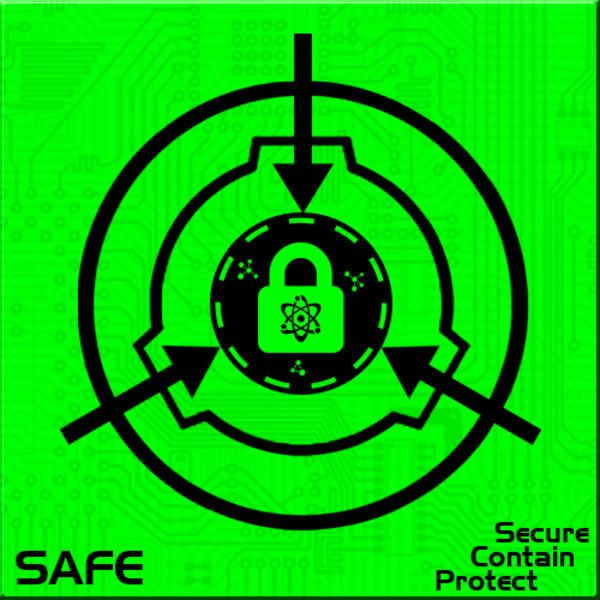classe: euclide
les SCP classer comme Euclide sont les SCP dangereux mais toutefois capable d'être contenu asser facilement avec des procédure de confinement adéquates
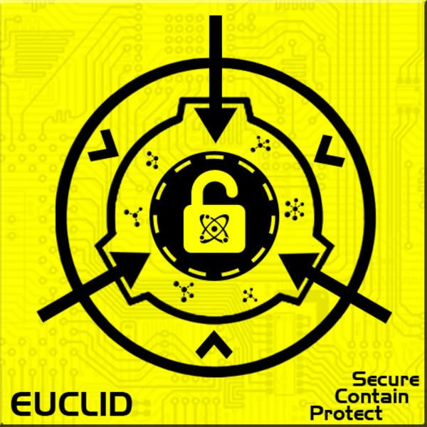classe: keter
les SCP classer comme Keter sont les plus dangereux, ils sont très dur a confiner, s'échapent souvent, peuvent causer des catastrophe si ils s'échapent, etc...
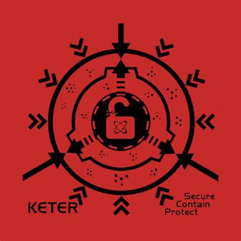classe: thaumiel
les SCP de classe Thaumiel sont des SCP qui peuvent être utiliser pour confiner d'autre SCP.
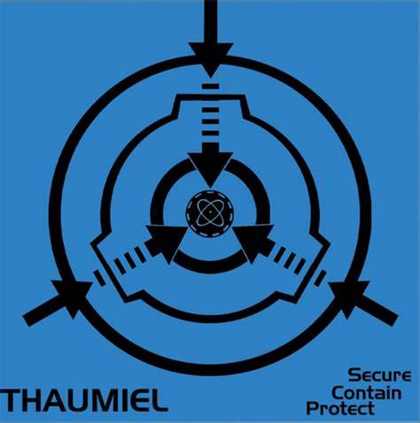voici quelques anomalie parmi les plus connues
| assignation | nom de code | classe | description | photo |
|---|---|---|---|---|
| SCP-999 | the tickle monster (le monstre au chatouille) | Safe | un petit monstre orange et gelatineux, ceux qui le touche deviennent heureux, au fil du temps il a été observer que cela peut guérir des traumatisme mentaux sur les gens en contacte avec 999 | 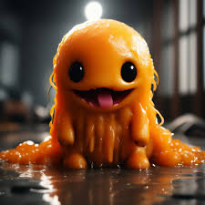 |
| SCP-939 | with many voice (avec plusieur voix) | Keter | des prédateurs a la peau translucide laissant voir leurs muscle, au dents en forme de crochets, au arrêtte dorsale pointu, une morsure de plus de 35 MPa et ayant la capacité d'immiter les voix des humains. Se reproduit beaucoup et est donc dangereux si jamais ils s'échappent | 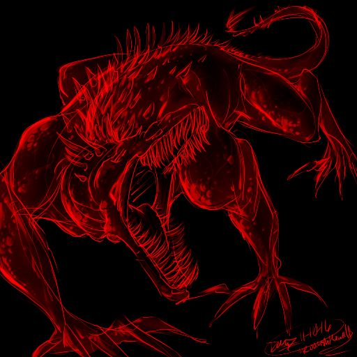 |
| SCP-682 | hard to kill reptile (le reptile dur a tuer) | Keter | un reptile connue a travers toute la fondation pour l'extreme danger qu'il représente et la trèes grande difficulter a le tuer, 682 déteste les humain. 682 possède un pouvoir de régénération qui le rend invincible jusqu'ici et une très grande force physique. afin de le garder en confinemment 682 doit être plonger dans l'acide pour contrer son pouvoir de régénération et l'affaiblir | 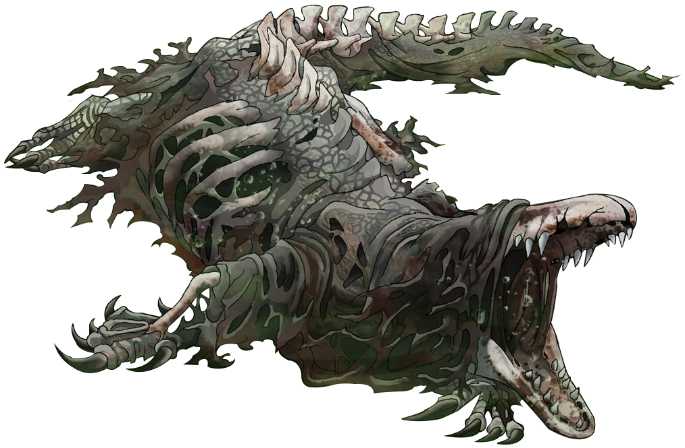 |
| SCP-173 | the sculpture (la sculture) | Euclide | une statue constituer de bare d'armature et de béton ayant des trace de peinture aérosole. scp 173 est extrèmement hostile, toutefois il ne peut pas bouger tant qu'il se trouven dans le champ visuel direct de quelqu'un. Il est imperatif que le champ visuel ne soit pas interompu, même par un clignement d'yeux pourait signifier la mort de l'observateur. 173 attaque en brisant le cou au niveau de la nuque ou par srangulation | 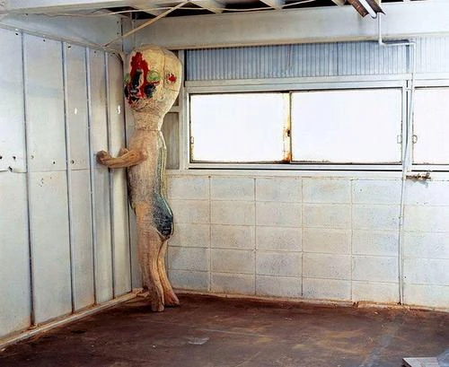 |
| SCP-096 | shy guy (l'homme gèner) | Keter | 096 est une créature humanoïde mesurant approximativement 2,38 mètres de haut, il ne possède qu'une faible masse musculaire, ses bras mesure 1,5 mètres et sont largement disportionner par raport a son corps, son corps est cractériser par labsence de couleur et de poils. 096 est la plus part du temps completement docile, mais lorsque quelqu'un regarde son visage, que ce soit directement, par vidéo, photo ou même enregistrement, 096 il rentrera dans un état de stress émotionnel considérable. SCP-096 cachera le visage avec ses mains et se mettra à hurler, pleurer et marmonner de façon incohérente. Approximativement une 1 à deux 2 minutes après que l'individu ait vu son visage, SCP-096 commencera à courir vers la personne ayant vu son visage et plus riens ne poura l'arrêter de procéder a la destruction de l'individu l'ayant regarder. lorqu'il aura terminer et qu'il ne restera plus rien que du sang, 096 retournera ensuite a son état de docilité | 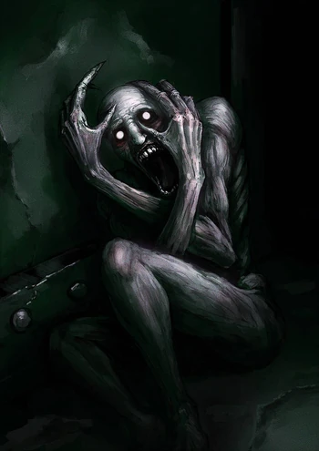 |
| SCP-049 | the plague doctor(le docteur de la peste) | Euclide | 049 est une créature humanoïde, d'environ 1,9 mètre de hauteur, répondant à la description d'un médecin de peste médiéval. 049 se montre généralement cordial et coopératif avec le personnel de la Fondation, il peut s'irriter grandement ou parfois devenir agressif s'il sent qu'il est en présence de ce qu'il appelle la "Pestilence", il devient alors hostile envers les sujet qu'il voit comme infecté. un simple touché de 049 sufit a faire stoper les fonction vitale d'un individu, après avoir eliminer l'"infecter il menera une opération chirurgicale sur le corps en utilisant le matériel contenu dans une mallette de médecin noire qu'il porte sur sa personne en toutes circonstances. ces opérations résultent souvent en la création d'instances de 049-2, les 049-2 sont des cadavre réanimer ayant une mobilité motrice de basique. | 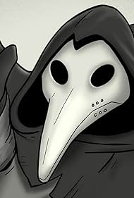 |
vidéo montrant quelque SCP
meilleurs jeux vidéo sur l'univers scp
| jeu vidéo | plateforme |
|---|---|
| SCP: secret laboratory | Steam |
| SCP: containement breach | Steam |
| SCP: pandemic | Steam |
| SCP: roleplay | Roblox |